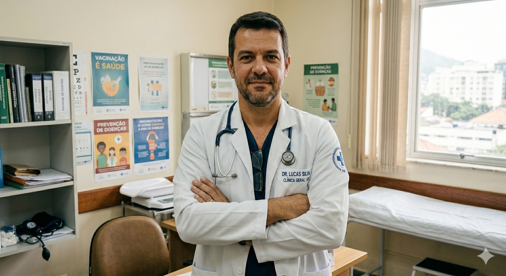

Aqui irei te contar minha história e o quanto sou apaixonado pelo que faço.
Olá, me chamo Marcelo. Nasci na periferia da cidade de São Paulo. Lá, desde criança, enfrentei muitas dificuldades, mas isso me tornou mais forte e determinado a seguir meu sonho de ser médico. Sempre estudei em escola pública, o que me ensinou a valorizar o esforço e a persistência.
Durante minha jornada, enfrentei muitos desafios, mas nunca desisti. Com muito esforço e dedicação, consegui entrar na faculdade de medicina e hoje sou um médico apaixonado pelo que faço. Acredito que a medicina é uma profissão nobre e gratificante, e estou feliz por poder ajudar as pessoas a melhorarem sua saúde e bem-estar.
Por isso, prometi a mim mesmo que, quando me formasse, iria contribuir para o bem-estar de todos os pacientes que atendesse, tanto pela questão do profissionalismo quanto pela busca constante de conhecimento, excelência na prática médica e com um preço acessível.

Atualmente, minhas especialidades são: Clínica Geral, Cardiologia e Endocrinologia.
Atualmente, atendo em um consultório localizado na Rua das Flores, nº 123.
Ver localização no Google MapsSiga-me no Instagram:
Visitar perfil do Dr. Marcelo